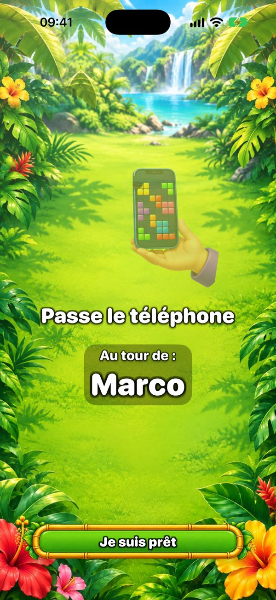
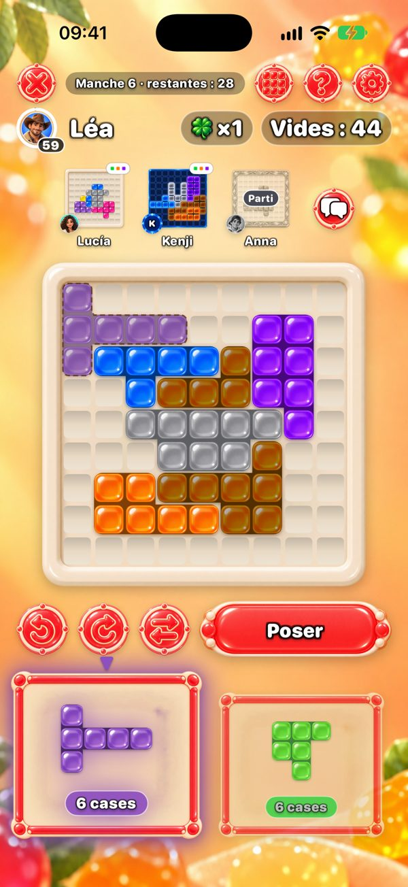
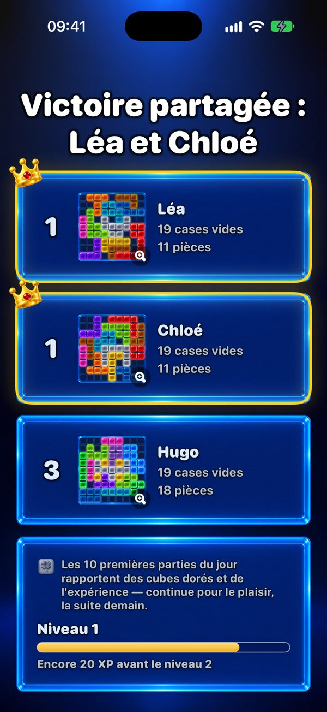

Un jeu à plusieurs sur un seul téléphone
Tu cherches un jeu pour toute la famille sur un seul téléphone ? One More Chance est un casse-tête qui passe de main en main : chacun remplit son propre plateau 9×9 avec les mêmes pièces, et celui qui laisse le moins de cases vides gagne.


Comment jouer sur un seul téléphone ?
Chacun commence avec une pièce de départ tirée au hasard, qui couvre le centre de son plateau. Ensuite, à chaque round, deux pièces apparaissent. Le premier joueur en choisit une et la pose où il veut sur son plateau — les pièces se tournent et se retournent — puis passe le téléphone. Un écran « Passe le téléphone » indique à qui c’est le tour. Tout le monde reçoit les deux mêmes pièces, le round est donc équitable ; seuls les plateaux grandissent différemment.

Combien de joueurs ?
Deux joueurs gratuitement. Avec Premium — un seul achat, sans abonnement — jusqu’à six personnes sur un téléphone ou un iPad. Pour un grand groupe, un iPad sur la table, c’est parfait.
Chacun peut-il utiliser son propre téléphone ?
Oui. Les téléphones proches se connectent par Bluetooth et Wi‑Fi — sans internet — et tout le monde joue en même temps, en voyant en haut les plateaux des autres. Seul celui qui crée la partie a besoin de Premium pour plus de deux joueurs.

Qui gagne ?
Celui qui laisse le moins de cases vides. Si aucune pièce ne rentre, tu prends « Une chance de plus » : une pièce en plus, rien que pour toi. Un plateau parfait, entièrement rempli, c’est le graal.

Combien de temps dure une partie ?
Une partie compte au plus 20 rounds. Seul, quelques minutes ; à plusieurs, ça dépend du temps que chacun réfléchit, puisqu’un tour, c’est une pièce. Avec Premium, tu peux limiter le tour à 30, 60 ou 90 secondes.
À partir de quel âge ?
Sur l’App Store, le jeu est classé 13+ à cause du chat facultatif avec les amis et de la publicité. Le jeu lui-même, ce sont des pièces colorées sur un plateau : pas de violence, pas de pression sans minuteur, et pas besoin de savoir lire pour poser une pièce — les plus petits peuvent jouer à côté d’un adulte.
C’est gratuit ? Il y a de la pub ?
Le jeu est gratuit. La pub n’apparaît qu’entre les parties en solo — jamais dans une partie entre amis, ni sur un téléphone, ni sur plusieurs. Premium supprime la pub et ajoute six thèmes et jusqu’à six joueurs.
Faut-il internet ?
Non. Sur un seul téléphone et sur plusieurs téléphones à côté, le jeu marche hors ligne. Internet ne sert qu’aux tables en ligne, aux amis et au classement du Défi du jour.
Soirée jeux ce soir ?
Gratuit sur iPhone et iPad. Passe le téléphone et découvre qui laisse le moins de cases vides.
Version Android bientôt disponible.